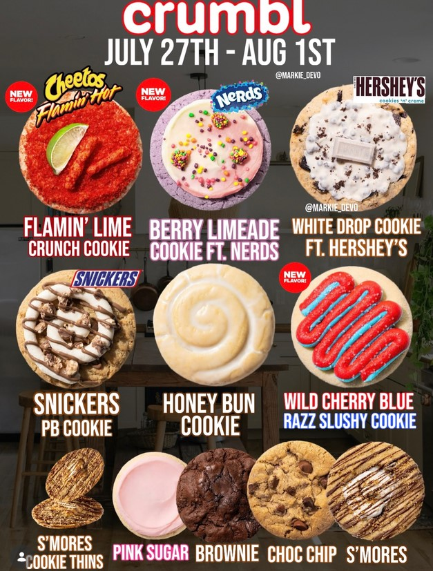

|
View my profiles on: |
Food Review: Crumbl Cookie7/30/26 Hello reader. This is my second installment of this food reviewing series. This time I'll be reviewing multiple things at the same time rather than just one food item because i'm reviewing a few cookie flavors from Crumbl Cookie. For those who don't know what Crumbl Cookie is, it's basically a boujee bake-sale stand. (That was an alliteration.) They sell these really big and overpriced cookies that have way too much sugar. The whole thing about Crumbl is that they have a diverse array of cookie flavours on their menu that gets changed every week. These flavours can range between an average chocolate chip cookie and a cookie covered in mango sauce and sprinkled with Tajin (Mexican seasoning mix) . This week, Crumbl has a few peculiar flavours on their menu. Here is a picture of that menu:  A few days ago, I drove over to a Crumbl Cookie with my cousin, my sister, and her coworker to try out some of these flavours. We ordered a box of these 6 flavours: Flamin' Lime Crunch, Berry Limeade, White Drop, Snickers Peanut Butter, Honey Bun, and Wild Cherry Blue Razz Slushie. A box of 6 cookies is $30 BY THE WAY. White Drop: This cookie had oreo pieces inside of it and a melted white chocolate hershey bar on top. It tasted pretty good but, you probably could've guessed that since it's a normal flavour. Snickers Peanut Butter: This was another normal flavour. Again, it was pretty good, just way too sweet for me to really enjoy. Honey Bun: This one is less normal but, still pretty normal. I actually really enjoyed this one, it wasn't too sweet and it felt like an actually good cookie while I was chewing it. You can definitely tell that there's cinnamon inside of the cookie and, that along with it's soft-chewiness reminded me of those cinnamon bar thingys they had at school during lunch and stuff. I kind of miss being in public school, college is pretty boring. Berry Limeade: First abnormal one! I thought the Nerds Gummy Clusters on top of the cookie would stand out but when you have a mouthful of straight sugar, everything just kind of blends together. The lime-flavoured icing on top didn't really go that well with the cookie but it didn't make it taste bad. It's definitely not good though, it's just alright. I guess. Flamin' Lime Crunch: You would probably expect this to be the worst one. My cousin and sister definitely seemed to think so. However, I didn't hate it. I won't say I liked it because the flavour was definitely off putting but somehow, the cream cheese wasn't disguesting when paired with the Hot Cheeto crumbs on top of the cookie. It was also a very interesting texture to have in your mouth, I liked it. It felt like I was actually eating Hot Cheetos at one point (which I was because, there were Hot Cheetos on top of the cookie as well as an actual lime). Wild Cherry Blue Razz Slushie: This is the worst one; in my opinion. First, the actual cookie part is pretty boring. it's just a basic sugar cookie, which means, the majority of the flavour lies within the large glob of red and blue frosting on top. Does it taste good: No. It was WAY too sweet. Every cookie from Crumbl Cookie is super sweet but, when I was eating the slushie cookie, I was actually scared to eat the rest of my piece of the cookie. We split the cookie into 4 pieces by the way, we weren't eating entire Crumbl cookies by ourselves. Would I eat any of these cookies ever again? No, except for the Honey Bun cookie of course. Actually, I would rather just eat an actual Mini Cinni. Also, if it wasn't obvious already, Crumbl Cookie's sales are carried by TikTok and other social media sites. Holy crap, I sound like such an oldie. What I was trying to say was, I would have never even known about Crumbl Cookie at all if Instagram didn't exist. |
|
View my profiles on: |
 Soundcloud
Soundcloud iTunes
iTunes YouTube
YouTube Instagram
Instagram